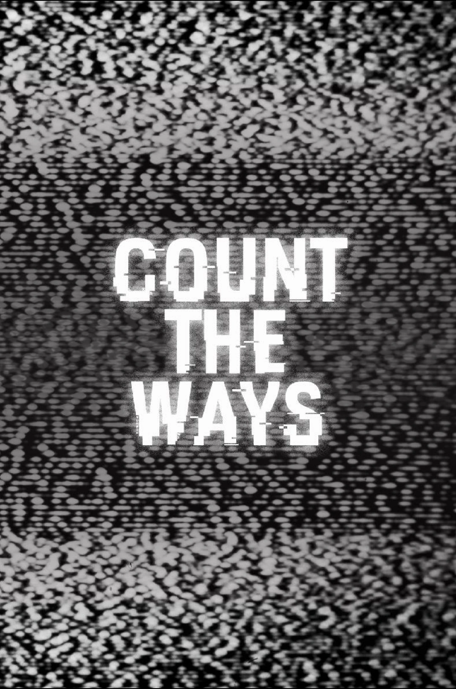

Em *Count the Ways*, Millie, uma adolescente solitária, é sequestrada por Funtime Freddy, um animatrônico que lhe dá uma escolha cruel: decidir a maneira como ela deve morrer. A história explora a escuridão emocional e como enfrentamos a ideia de mortalidade.
